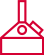

Вещи, которые носят и после завода. На каждой есть то, что знают только свои: график 2/2, двойное брожение, пиктограмма своего отдела, надпись со спины рабочей куртки. Получить их можно только за шаг на заводе, поэтому каждая вещь что-то значит.
Знак маленькийЛоготип стоит на бирке, под воротником или на ленте. На груди и спине фраза или рисунок, ради которых вещь и надевают.
Язык заводаТолько настоящее: график смен из «Описания практики», брожение из истории компании, пиктограммы оборудования из брендбука.
За шаг на заводеВещь выдают за экскурсию, первую смену, месяц, друга на смене, законченную практику. Купить нельзя, за одну заявку не дают.
Плотные вещиХуди и лонгслив шьют из плотного хлопка, мелкий рисунок вышивают. Тонкая футболка с логотипом уходит в шкаф.
Экскурсия, музейЗначок и наклейка: колос за контрольные вопросы на экскурсии, «1978» в музее
Стенд на ярмаркеНоски за все контрольные вопросы без ошибок300 пар на сезон
Первая сменаЛента с чехлом для пропуска и значок своего отдела
Месяц на сменеЛонгслив «2/2»
Практика законченаХуди «Я делаю натуральные напитки» с пиктограммой отдела
Друг вышел на сменуШоппер «Состав смены» каждому из двоих
Амбассадор, наставникФутболка «Двойное брожение» для роликов, нашивка «Наставник»
Спина: надпись 300 × 156 мм, 120 мм от горловиныГрудь: пиктограмма отдела, вышивка 55 мм. Низ: тканая бирка
ЛабораторияЦех розлива

Технологический цехСклад
Практика закончена
Худи
Надпись та же, что на спинах рабочих курток в ролике компании. Худи вручает наставник вместе с характеристикой, поэтому надпись правдива: её носит человек, который делал напитки. На груди вместо логотипа пиктограмма своего отдела: свои узнают, остальные спрашивают.
Основа
футер с начёсом 320–360 г/м², свободный крой, капюшон двойной, карман-кенгуру
Цвет
чёрный
Спина
шелкография белым, 300 × 156 мм, текст в кривых: скачать SVG
Грудь
вышивка красным, своя у каждого отдела: art/chest-*.svg
Горловина
печать внутри: слоган «Квас делают люди», art/hoodie-neck.svg
Бирка
тканая, красная, знак «Очаково» белым, в шве слева внизу
Тираж
по числу закончивших практику, размеры XS–XXL
Перед: «2/2» во всю ширину, 400 ммСзади: знак «Очаково» под воротником, 60 мм
Месяц на смене
Лонгслив
На заводе график «день, ночь, отсыпной, выходной» называют «2/2». Посторонним это ничего не скажет, а свои поймут сразу. В первый месяц новички уходят чаще всего, и вещь за месяц отмечает, что самое трудное позади.
Основа
кулирная гладь 200–220 г/м², рукав с манжетом
Цвет
натуральный, небелёный хлопок
Перед
«2/2» во всю ширину, шелкография красным, 400 × 235 мм, 90 мм от горловины, текст в кривых: скачать SVG
Сзади
знак под воротником, art/longsleeve-nape.svg
Когда
после месяца на смене, вместе с вопросом «Как дела на смене»
Принт 280 × 238 мм на сумке 380 × 420 мм
Друг вышел на смену
Шоппер «Состав смены»
Сделан как этикетка с составом, только вместо ингредиентов люди и смена: наставник, новичок, пульт линии, 12 часов. Под составом слоган «Квас делают люди». Шоппер получают оба друга, когда второй вышел на смену, и у них одна шутка на двоих.
Основа
плотная бязь или саржа 220–280 г/м², ручки 65 см
Цвет
натуральный, небелёный
Нанесение
шелкография в два цвета, 280 × 238 мм, текст в кривых: скачать SVG
Условие
награду за друга компания ещё утверждает: на сайте и в боте её нет
Грудь: схема 280 × 266 мм
Амбассадоры: в ней снимают ролики
Футболка «Двойное брожение»
Схема как из учебника: солод, варка, брожение, розлив, и две ветки брожения, молочнокислое и дрожжевое. Амбассадоры носят её в коротких роликах, поэтому вещь работает и как реклама.
Основа
кулирная гладь 200–220 г/м², свободный крой
Цвет
белый
Нанесение
шелкография в два цвета, art/tee-fermentation.svg
Тираж
по числу амбассадоров, две на человека
Раппорт 64 × 64 петли, пятка и мысок красныеРаппорт крупно: одна клетка равна одной петле
Стенд на ярмарке: все контрольные вопросы без ошибок
Носки
Пиктограммы варочного котла, бутылки, колоса и танка брожения, переведённые в петли жаккарда. Из недорогого мерча носки носят чаще всего: их надевают каждый день, и за ними подходят к стенду. Выдаём за знание компании, без заявки.
Основа
хлопок с эластаном, высокие, вязаный жаккард в два цвета
Наклейки, лист A6, розовый контур показывает высечку
Экскурсия, музей, первая смена
Значки и наклейки
Коллекция из шести: четыре отдела практики, колос за контрольные вопросы на экскурсии и «1978» в музее, год, когда комбинат начал работу. Значок своего отдела получают в первую смену. Собрать все шесть можно, только пройдя весь путь. Значки цепляют на рюкзак и шоппер.
Значки
мягкая эмаль, красное поле, кант и рисунок из никеля, застёжка «бабочка», art/pins.svg
Наклейки
виниловая плёнка, матовый ламинат, высечка по контуру, art/stickers.svg
Склад
пиктограммы склада в брендбуке нет, её нарисовали по той же сетке (art/picto-warehouse.svg), нужно согласовать
Лента 20 × 900 мм, раппорт 225 ммНашивка «Наставник», 110 × 45 мм
Первая смена и наставники
Лента и нашивка
Пропуск нужен на каждой проходной, а за потерю по справочнику студента берут штраф 500 ₽. Лента с чехлом полезна с первого дня. Нашивку «Наставник» получают сотрудники после обучения в Учебном центре: новичок сразу видит, к кому подойти.
Лента
сублимация, 20 мм, карабин и прозрачный чехол, art/lanyard.svg
Нашивка
вышивка, оверлок тёмно-красный, на липучке, art/patch-mentor.svg